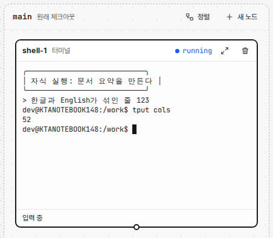
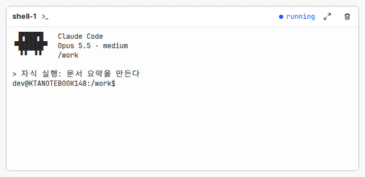
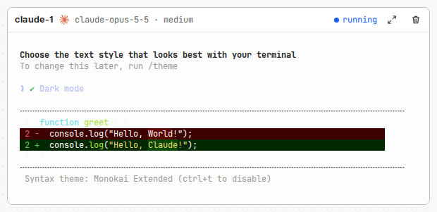
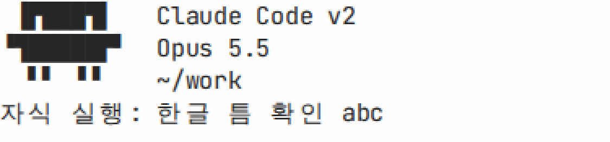
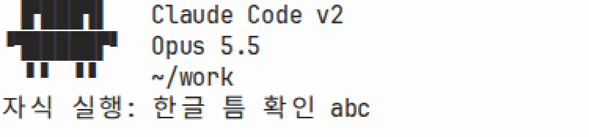
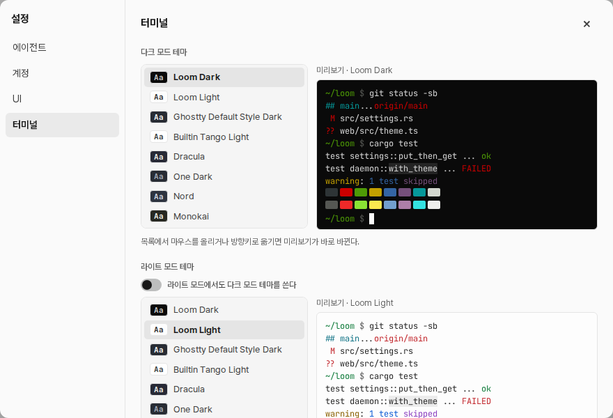
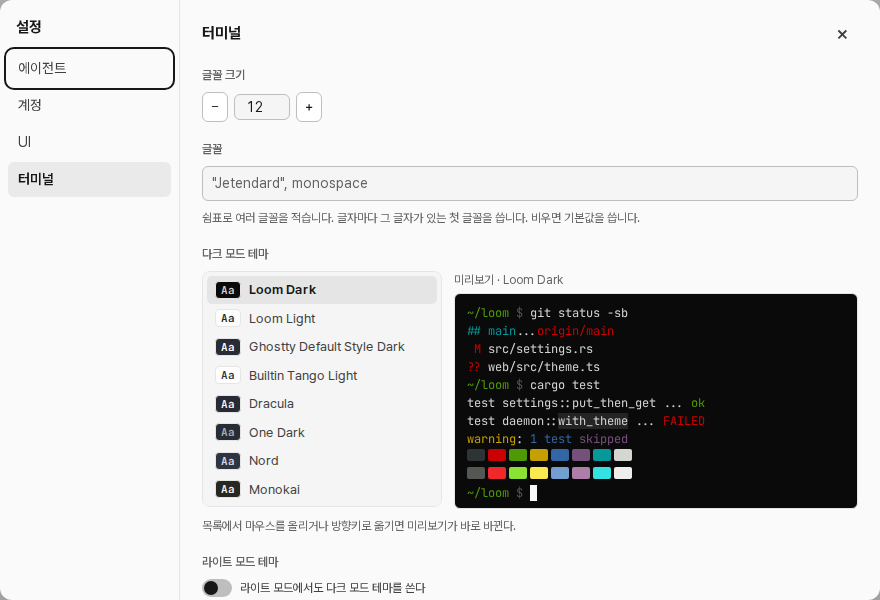
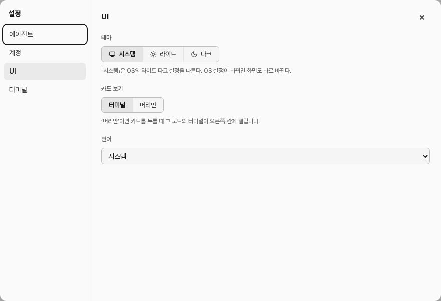
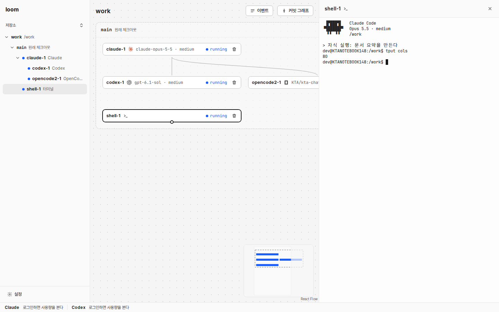
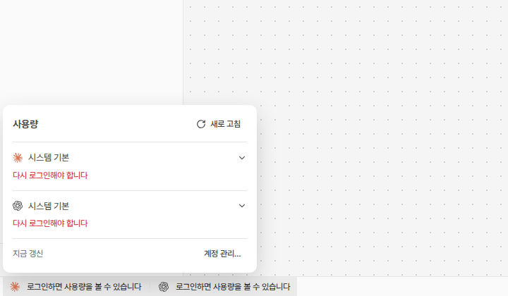

카드 터미널
카드 · 전 (52열, 한글 사이 틈, 발 줄)

카드 · 후 (Jetendard, 80열, 발 줄 없음)

카드 머리 · 후 (이름, 로고, 모델 · 추론 강도)

Claude 마스코트 · 전 (main, 배율 1.25)

Claude 마스코트 · 후 (Jetendard, 배율 1.25)

설정 「터미널」 탭 · 전

설정 「터미널」 탭 · 후 (글꼴 크기, 글꼴)

설정 「UI」 탭 · 후 (카드 보기)

머리만 보기 · 카드를 누르면 오른쪽 칸에 터미널

사용량 · 후 (공급자 로고, ‘새로 고침’ 버튼)
